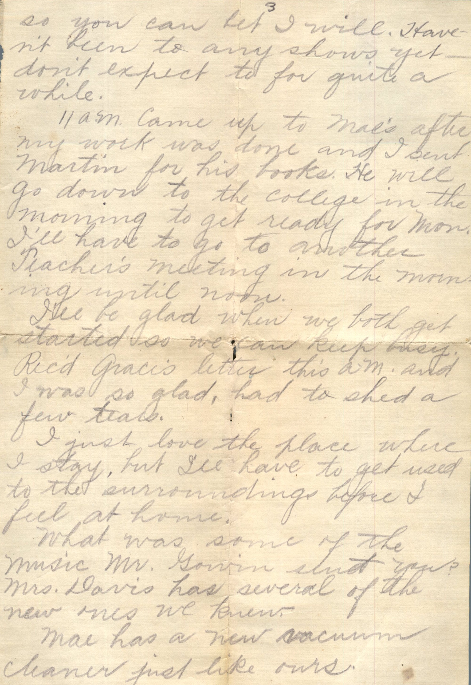
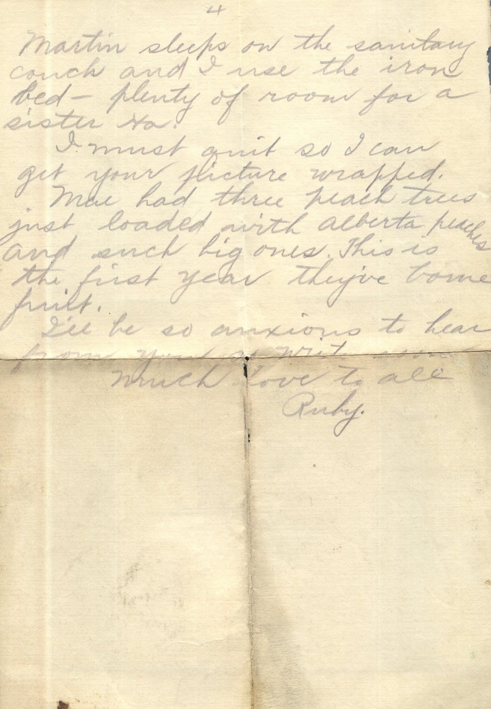
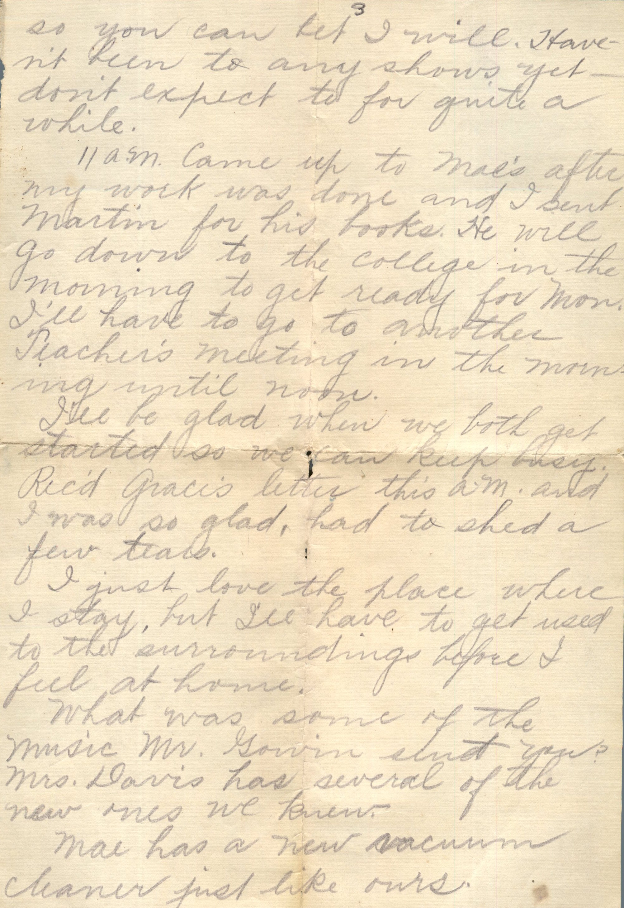
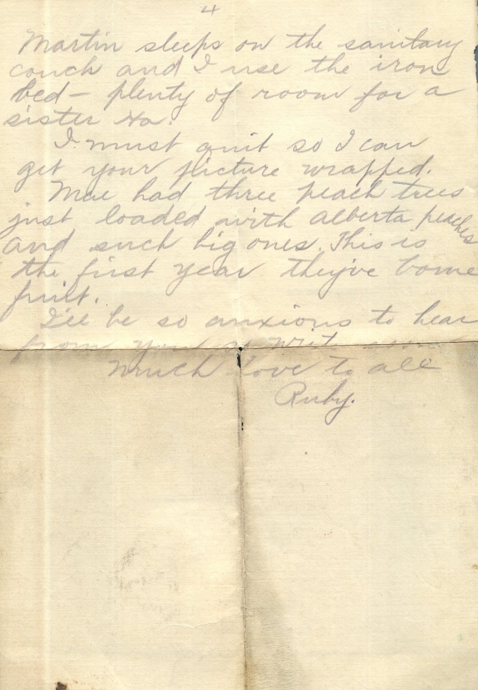
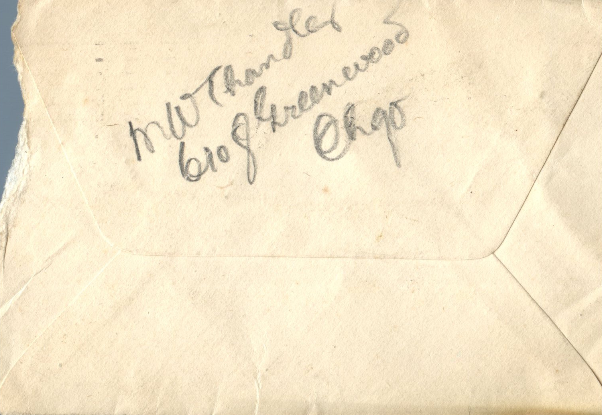
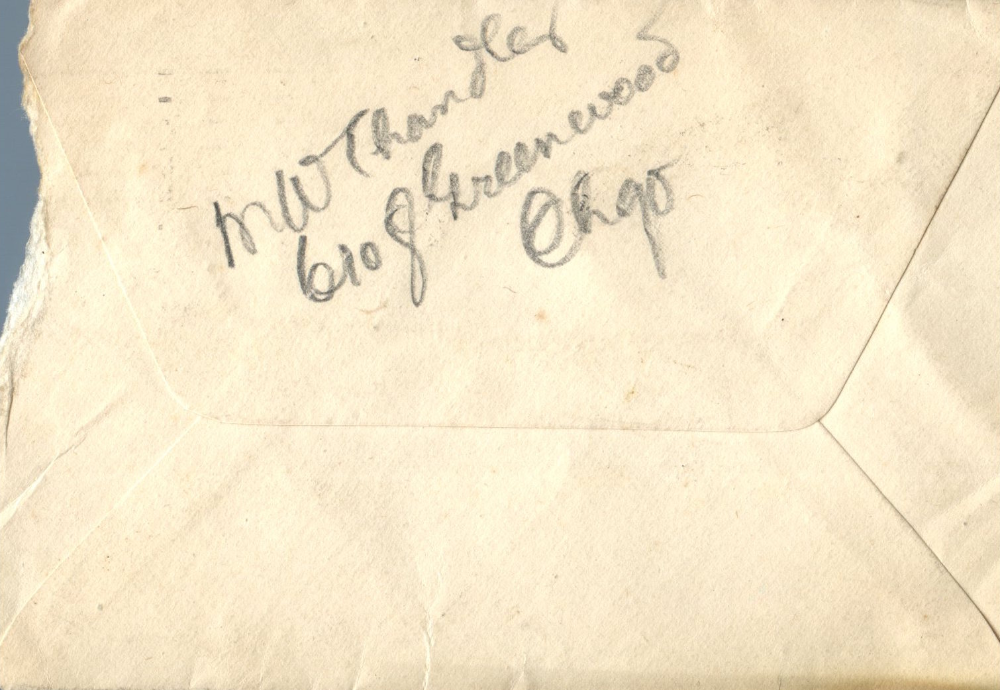
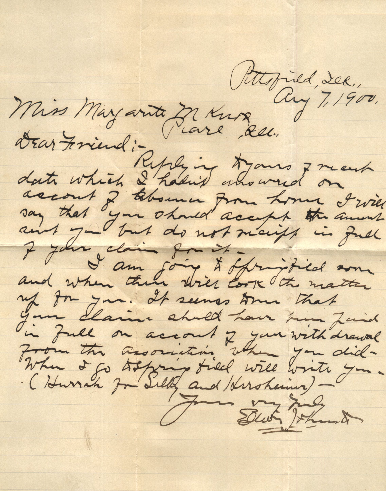

{kind=link}
{kind=link}
{kind=link}
From: Annie, To: Jeanette and All
From: Annie, To: Jeanette and All Sent From: Granite, September 25
Dear Nett and all, I will write you a few lines. Pa is lots better today. He is sitting up was out in front room this morning for quite a while. Martin had a letter to answer and share him so he looks better and he says he feels better. He is awful weak but can help himself so much better than he did. He started a line last night and I got up and mailed it. Him and me get along fine. Virginia is on my lap she wanted to know who I was writing to. She said do you want Aunt Nett will come down. Well I will close Love to all, Annie
From: Fred, To: Bess Chandler
From: Fred, To: Bess Chandler
Mailed From: Pleasant Hill, Illinois on September 9
Miss Bess Chandler Pearl, Illinois
September 9 I may not be down tomorrow. My boss is going to Louisiana and could not get back soon enough. Monday morning I will be down one night next week if everything is all right. Your Friend, Fred
From: Hetty W., To: Bess Chandler
From: Hetty W., To: Bess Chandler
Mailed From: Pearl, Illinois on September 7, 1990
Miss Bess Chandler Pearl, Illinois Pike Co.
Dear Bessie~ Wish you many many happy birthdays. Your Friend, Hetty W.
From: Martin Chandler, To: Unknown Chandler
From: Martin Chandler, To: Unknown Female Chandler Mailed From: Santa Margarita, CA on September 3
Santa Margarita, CA Sept 3 Dear Little Sister, Got your letter this morning together with Margaret's and was sure glad to get it. By golly I wish you'd all write every day. Hang on to the iron kiddo. It will make a woman out of you. Gee that sure was a whole bunch of tough luck about that earache. Did you try warm milk and Laudanum? That's what Mama used to do for me when I was a kid. You want to read slow on this so it will last longer cause I haven't got time to write very much. Well sweetheart the strike "haint" going to be pulled off so guess I'll work a while longer. I sent Margaret 3 Simoleans to buy books. Forgot about her birthday Aug 26 but I'll try and remember March 10th. Suppose you've been living in joyful anticipation of the coming Monday whence you will again enter the old school house. Well I gotta stop. Write me right away quick, Yrs, Martin
From: Ruby Chandler, To: Grace Chandler
 
 From: Ruby Chandler, To: Grace Chandler
Mailed From: Wichita, Kansas on September
From: Ruby Chandler, To: Grace Chandler
Mailed From: Wichita, Kansas on September
Wichita, Kans. Sept Dearest Grace; Received your care today and was glad to get a line from you. Will send picture inclosed later. I brought it down from Mae this evening. We are quite comfortably located now, will proceed to desirable rooms as near as possible. The room facing Cleveland Ave has one window on that side and one at the end. Have Mae's sanitary couch at that window - on the north that is - and the dresser in the corner. Have a white iron bed at the other end of room, a table in the center and a gas heater and two rockers, the other room is same size with one large window, and the entrance door, with a closet leading off. A fine place for my clothes and shelves for my hats. Have a dandy gas stove and over a kitchen cabinet with top, which I use for the dishes, a square dining table and the chairs, and a nice rug on both floors. Mae and Art came up for supper, we had watermelon for desert. You never saw such big melons there and the biggest are $0.15. A $0.10 one was plenty and had some left and just think how much Martin and I eat. Say anything you want to do. Wont insult us a particle. How I do wish it were possible for you to be here with me then I'd board you so you could go to business college too. There's a discount for two from same family. I can swim to beat the dutch. Breast stroke and on my back, too. We all went this am quite a crowd there. Sam took me boat riding the other night and asked me last night to go again so you can bet I will. Haven't been to any shows yet, don't expect to for quite a while. 11 am Came up to Mae's after my work was done and I sent Martin for his books. He will go down to the college in the morning to get ready for Mon. I'll have to go to another teacher's meeting in the morning until noon. I'll be glad when we both get started so we can keep busy. Received Grace's letter this am and I was so glad, had to shed a few tears. I just love the place where I stay, but I'll have to get used to the surroundings before I feel at home. What was some of the music Mr. Gorin sent you? Mrs. Davis has several of the new ones we knew. Mae has a new vacuum cleaner just like ours. Martin sleeps on the sanitary couch and I used the iron bed. Plenty of room for a sister Ha. I must quit so I can get your picture wrapped. Mae had three peach trees just loaded with Alberta peaches and such big ones. This is the first year they've borne fruit. I'll be anxious to hear from you so write. Much love to all, Ruby
From: May, To: Margaret Knox


From: May, To: Margaret Knox Mailed From: Milton, Ill on August 81, 1900
Miss Margaret Knox Pearl, Ill
Return in 5 days to F. Johnston, M, D., Milton, Ill.
Milton, Ill. Aug, 30, 1900 Dearest Aunt, I'm here and sick as usual, but not nearly so sick as I usually get. I didn't "puke" at all but was feeling mighty bad , had such a terrible headache. I forgot the black collar which belongs to my organdy dress and you send it by Mr. Lester tomorrow (Friday). It is in the top of my bunk just raise the lid and you'll see it. Tell Ruby that Veda has been over already to see if she was coming back. Aunt Helen has been in to hear about Ace. This is all the news at present. Haven't been out any yet. Write to me soon, Your Niece, May
From: H. Blasdel, To: Ruby Chandler

 From: H.B. Hasdel
From: H.B. Hasdel
Miss Ruby, C/O M.M. Davis, Emid, Oklahoma R.F.D.
Miss Ruby, I trust you are enjoying our cool nights. Can not hope you do the days. Do you not think that our summers beat those of Illinois? How is fighting Dick? H. Blasdel
From: Unknown, To: Ruby Chandler


From: Unknown, To: Ruby Chandler Postcard Info: Printed in Germany Mailing From: Pearl, Illinois on August 8
Miss Ruby Chandler Pearl, Illinois
Pearl Song Ruby C
From: Elijah L. Fhurst, To: Margaret M. Knox

From: Elijah L. Fhurst, To: Margaret M. Knox Mailed From: Pittsburg, Ill. on August 7, 1900
Miss Margaret M Knox Pearl, Ill.
Dear Friend, Replying to your freight data which I hadn't answered on account of absence from home. I will say that you should accept the amount sent you but do not receipt in full of your claim for it. I am going to Springfield soon and when there will look the matter up for you. It seems that your claims should have been paid in full on account of your with drawl from the association when you did. When I go to Springfield will write you. (Hurrah for Libby and Horrshumin) - Yours very truly, Elijah L. Fhurst